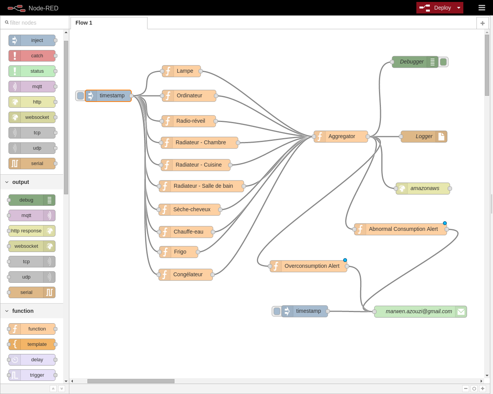

Energy monitoring
Projet M2M - 2015/2016
AZOUZI Marwen & FAURE Adrien
Energy monitoring
- Mesurer la consommation d’énergie d'une maison;
- Mesurer la consommation d'un appareil spécifique;
- Visualisation en directe des consommations;
- Alerte en cas de surconsommation.
- Alerte en cas de consomation anormale (en vacances par exemple).
L'architecture

Les technologies
Node-red
Problèmes rencontrés
- Emoncms : logiciel instable.
- Discuter avec les développeurs sur github ;
- Essayer dans un autre environement. (Raspberry pi , AWS);
- ESP8266 : reboot sans raison.
- Faire beaucoup de recherche (irc, google etc);
- Trouver la configuration parfaite.